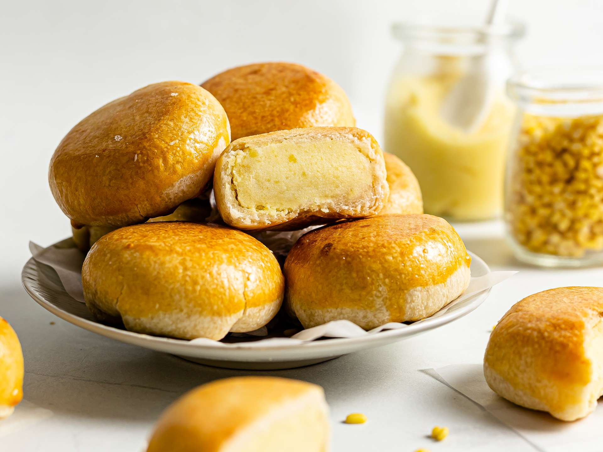
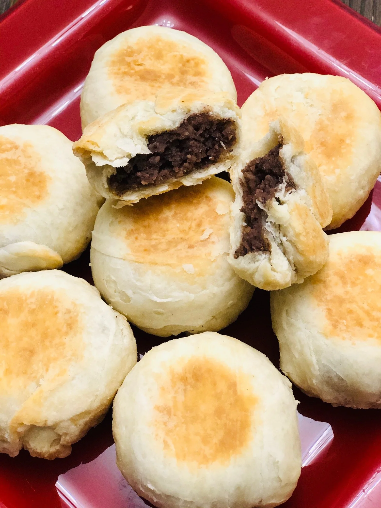
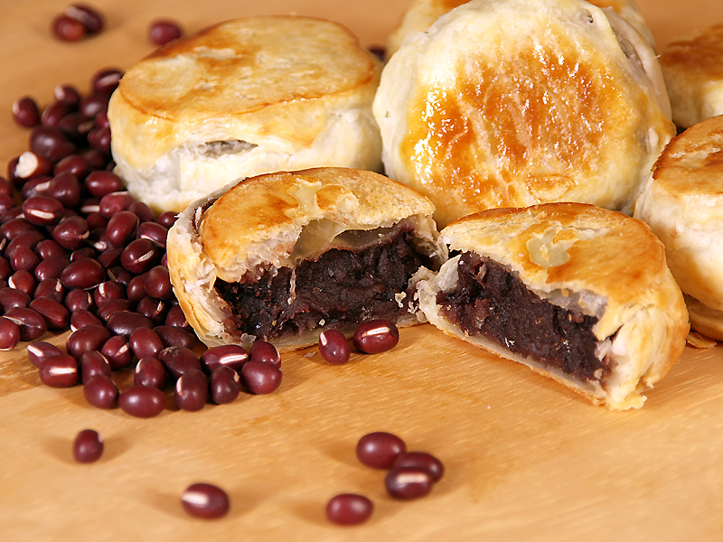
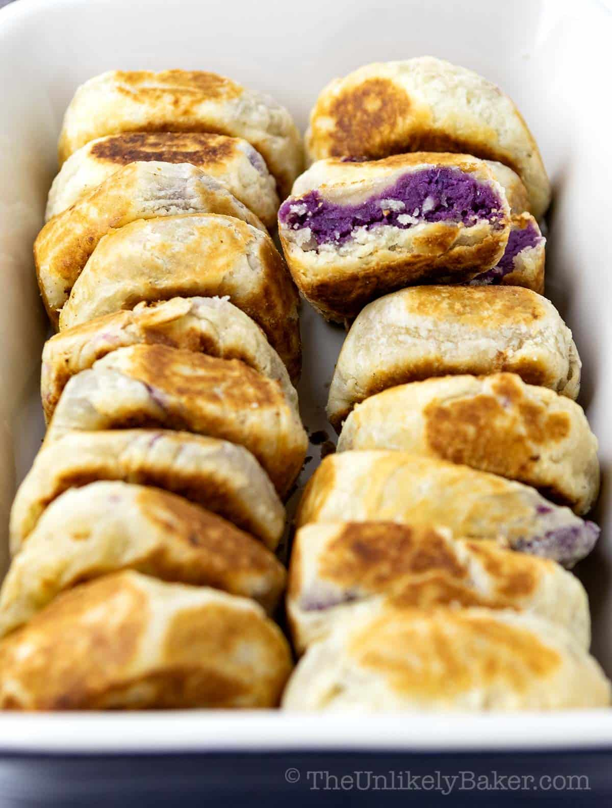
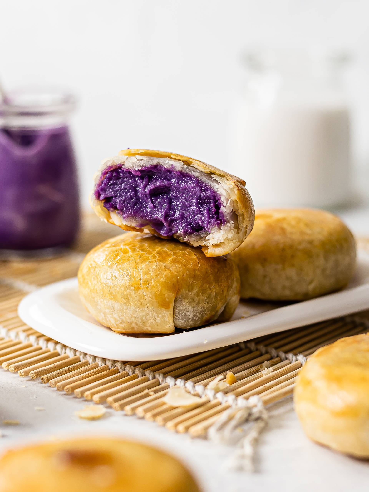

Hopia





History
Ang Hopia ay may pinagmulan sa China, partikular sa Fujian province, at dinala sa Pilipinas ng mga Chinese traders bago pa ang Spanish colonization of the Philippines. Sa paglipas ng panahon, niyakap ito ng mga Pilipino at nagkaroon ng iba’t ibang local variations. Isa sa mga pinakasikat na lugar na nagpasikat nito ay ang Binondo, na kilala bilang pinakamatandang Chinatown sa mundo. Mula sa traditional mung bean filling, nagkaroon ito ng iba’t ibang flavors tulad ng ube, baboy, at custard, kaya naging bahagi na ito ng Filipino snack culture.
Ingredients & Notes
All-purpose flour
Sugar
Lard
Mung bean paste
Oil
Egg
Price
₱10